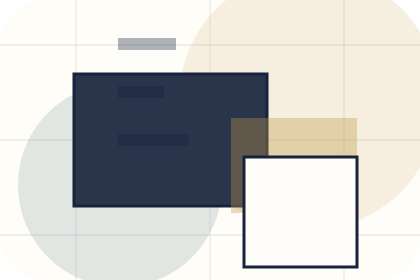
Context
Bio gives the page a specific angle instead of repeating the navigation label.
Press / 01
Press opens as a clear personal brands decision hub: what Brand offers, who it helps, why it matters, and which route to take first.
The first screen combines positioning, proof, primary action, and fast internal navigation, so people can act immediately or compare the rest of the press route with context.
Editorial author hero
Select the closest route and Brand keeps the next step, proof, and follow-up expectation aligned with authority and booking confidence.
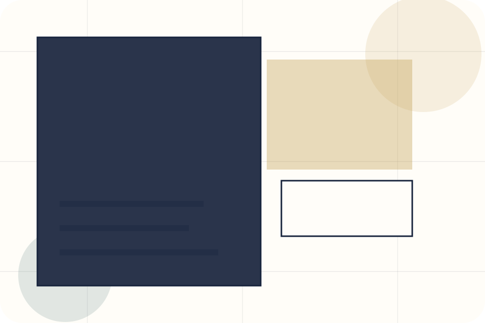
Press / 02
Bio adds editorial context to the press route, using the author essay and media system structure to support authority and booking confidence before visitors choose a next step.
Brand uses essay media cards and focused copy to make the decision easier to scan, aligning the section with authority and booking confidence rather than filling space.
Explore Press
Bio gives the page a specific angle instead of repeating the navigation label.
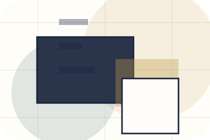
The essay media cards show what to compare, what to avoid, and what matters most for personal brands, creators & public figures visitors.
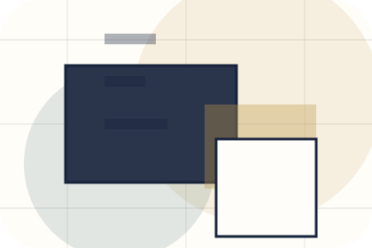
The final cue points to a useful internal route so the section keeps the journey moving.
Press / 03
Photos adds editorial context to the press route, using the author essay and media system structure to support authority and booking confidence before visitors choose a next step.
Brand uses essay media cards and focused copy to make the decision easier to scan, aligning the section with authority and booking confidence rather than filling space.
Explore PressPhotos gives the page a specific angle instead of repeating the navigation label.
The essay media cards show what to compare, what to avoid, and what matters most for personal brands, creators & public figures visitors.
The final cue points to a useful internal route so the section keeps the journey moving.
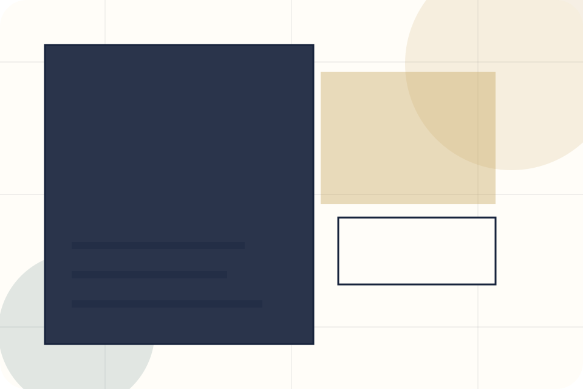
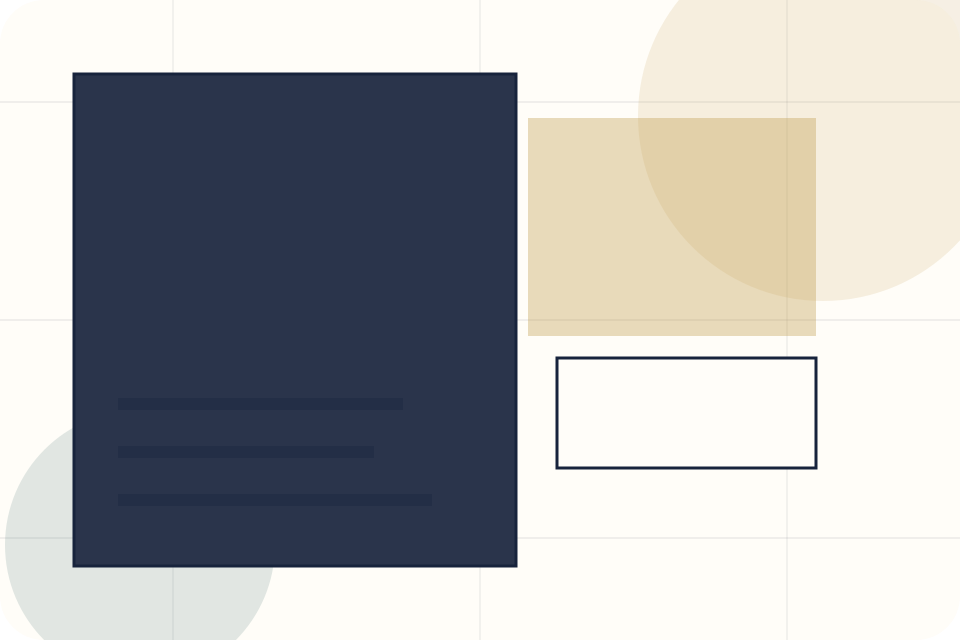
Press / 04
Logos adds editorial context to the press route, using the author essay and media system structure to support authority and booking confidence before visitors choose a next step.
Brand uses essay media cards and focused copy to make the decision easier to scan, aligning the section with authority and booking confidence rather than filling space.
Explore PressLogos gives the page a specific angle instead of repeating the navigation label.
The essay media cards show what to compare, what to avoid, and what matters most for personal brands, creators & public figures visitors.
The final cue points to a useful internal route so the section keeps the journey moving.
Press / 05
Mentions adds editorial context to the press route, using the author essay and media system structure to support authority and booking confidence before visitors choose a next step.
Brand uses essay media cards and focused copy to make the decision easier to scan, aligning the section with authority and booking confidence rather than filling space.
Explore PressBrand structures mentions around context, judgment, and a clear next route so visitors can compare the block quickly before they book an appearance.
Book AppearancePress / 06
Kit adds editorial context to the press route, using the author essay and media system structure to support authority and booking confidence before visitors choose a next step.
Brand uses essay media cards and focused copy to make the decision easier to scan, aligning the section with authority and booking confidence rather than filling space.
Explore Press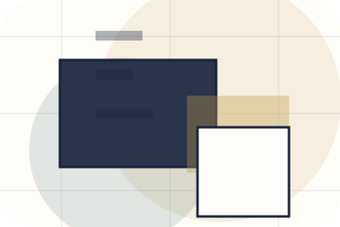
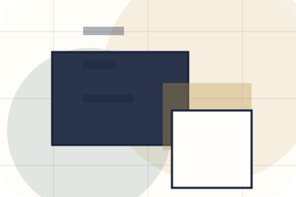
Kit gives the page a specific angle instead of repeating the navigation label.
Press / 07
Downloads gives researching visitors a practical route into guides, checklists, and comparison material without leaving the site structure.
Each resource behaves like a useful internal link, giving cold and warm visitors a way to learn, compare, and return to the action path.
View ResourcesA useful entry point for visitors who need more context before they book an appearance.
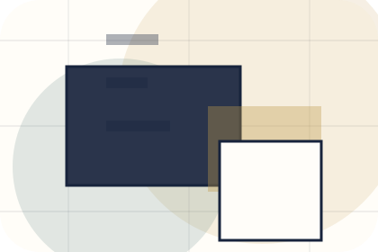
A scannable comparison aid that makes research usable before the next decision.
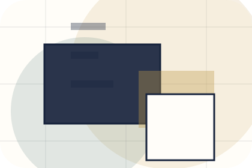
A route back to support, services, or contact when the visitor is ready to act.
A useful entry point for visitors who need more context before they book an appearance.
Open resourceA scannable comparison aid that makes research usable before the next decision.
Open resourceA route back to support, services, or contact when the visitor is ready to act.
Open resourcePress / 08
Contact makes the contact path concrete: what to send, how the response works, and what Brand needs before visitors book an appearance.
The section reduces contact friction by naming the channel, expected detail, privacy path, and response expectation instead of dropping visitors into a generic form.
Explore PressBrand keeps contact practical: send the key details, choose the right contact route, and know what kind of reply to expect.
Book AppearanceEditorial author hero
Select the closest route and Brand keeps the next step, proof, and follow-up expectation aligned with authority and booking confidence.
Press / 09
Media adds editorial context to the press route, using the author essay and media system structure to support authority and booking confidence before visitors choose a next step.
Brand uses essay media cards and focused copy to make the decision easier to scan, aligning the section with authority and booking confidence rather than filling space.
Explore PressMedia gives the page a specific angle instead of repeating the navigation label.
The essay media cards show what to compare, what to avoid, and what matters most for personal brands, creators & public figures visitors.
The final cue points to a useful internal route so the section keeps the journey moving.
Editorial author hero
Select the closest route and Brand keeps the next step, proof, and follow-up expectation aligned with authority and booking confidence.
Press / 10
Brand closes the press route with a clear action, a quick reminder of the value, and a low-friction way to book an appearance.
Visitors who are ready can use the primary action. Visitors who are still comparing can scan the section links, proof, and support routes before they book an appearance.
Book AppearanceThe final block keeps the choice simple: act now, compare one more proof route, or send enough detail for a focused response.
Book Appearanceauthority and booking confidence
A personal brand site with editorial essay rhythm, speaking/media cards, newsletter conversion, and booking clarity. Press ends with a direct path to book an appearance, plus enough context for visitors who still need to compare.
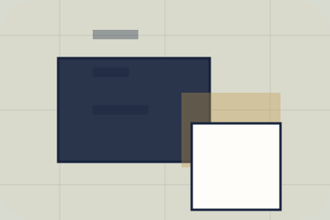
Book AppearanceInformation is provided for planning and should be reviewed for the final client, location, and operating rules.